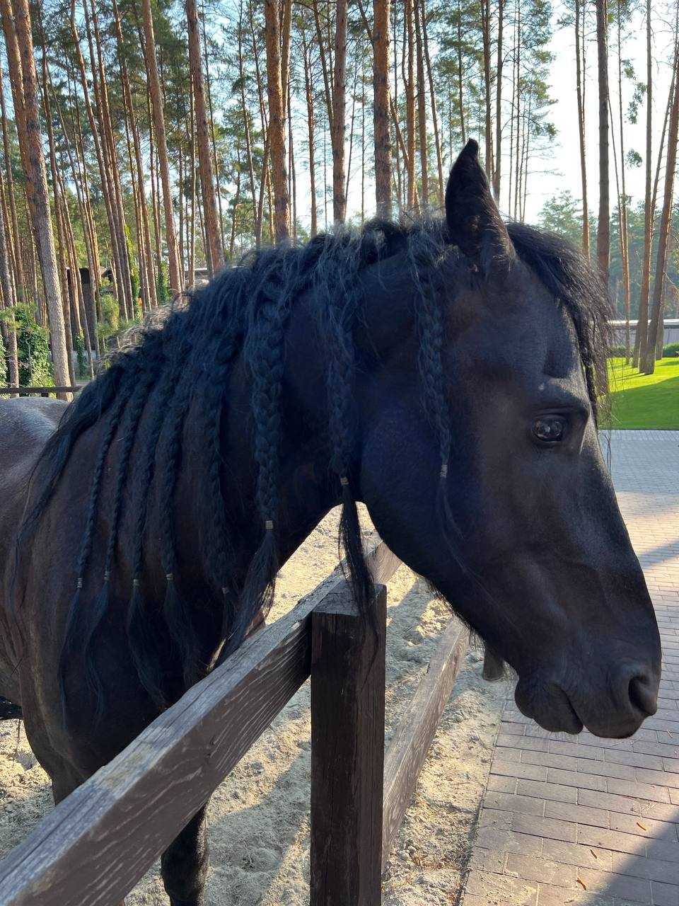
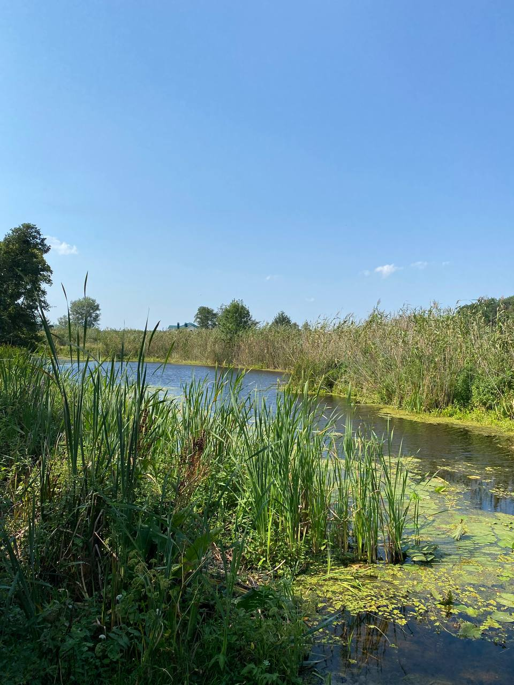

Як був собі дід та баба. У діда була дочка і в баби дочка; обидві вже були дівки. Дідової дочки баба не любила. Усе, було, лає її, сердешну, та знущається над нею, та ще, було, й діда підцьковує, щоб згриз голову своїй дочці. Оце, було, підуть обидві дівки на досвітки; бабина ж дочка усе тільки жирує з хлопцями, поки ті й мички попалять, і пряжу порвуть, а дідова дочка усе робить — пряде там або що інше, а вже ні часиночки не згуляє. Оце ж уранці йдуть додому; дійдуть до перелазу, то бабина дочка й каже дідовій:
А матері того й треба — напуститься зараз на ту сердешную: «Ти сяка й така, ти й ледащо, ти й робити не вмієш.» А вона, бідна, вже тільки плаче. Що дальше — баба все гірше й гірше ненавидить свою пасербицю. Раз і каже дідові:
— Одведи-таки та й одведи свою дочку в ліс: нехай її там звіряки з'їдять. Вона, ледащо, не хоче нічого
робити,— нехай пропада.
Дід довго одказувався: жаль було йому дочки,— та що ти зробиш з бабою?.. Вона й його добре держала в руках,
і він її боявся, як той ладану.
— Збирайся ж, дочко, та й ходім,— каже дід.
А баба така вже рада, мов її на вилах підсадило: мотається так проворно по хаті та лагодить харчі.
— Оце ж тобі, дочко, й борошенця нав'язала: в одному вузлику пшеничне — галушечку або що коли звариш, а оце пшінця на кулешик і сало.
Забрала вона ті харчі, заплакала та й пішла з батьком. Йшли-йшли, дійшли до лісу; дивляться — доріжка. Батько й каже:
— Ходімо ж оцією доріжкою. Куди вона нас приведе, там тобі й жити.
Пішли. Далеко вже одійшли од краю, а ліс густий-густий, такий, що й не проглянеш; коли це дивляться — лощинка, а там пасіка й землянка.
Увійшли вони в землянку.
— Добрий день!
А дід встає з печі та:
— Здорові, люди добрі!
Ото розпиталися там, що за люди і чого сюди забилися. Отак і так, розказують. І просить батько того діда, щоб прийняв його дочку.
— Та й зоставайся,— каже,— дочко, будемо тут удвох жити. Літом я буду в пасіці сидіть, а ти тут займеш собі огородець та будеш куйовдиться й на зиму дбати всячину; а зимою хоч бджоли й забирають додому, а я все-таки тут живу,— то й буде нам с тобою охітніше, аби твоя охота.
Батько ще трохи поговорив з дідом та й каже дочці:
— Роздивись же там, дочко, що тобі мати дала, та заходись — навари вечеряти, а я піду дровець урубаю.
Кинулась вона до тих вузликів, гляне: в одному — попіл, а в другому — печина. Вона так і заголосила.
— Не плач, дочко,— каже дід,— піди в комору: у мене всячина є; набери борошна пшеничного й сала візьми, та й
навариш галушок.
Пішла вона, набрала борошна, замісила, затопила в печі й почала варити вечерю.
Дід пішов на ніч додому в село: йому там треба було взяти вуликів і деяких харчів,— а батько її сказав, що переночує цю ніч тут, а завтра раненько піде додому. Він сказав це тільки на те, щоб дочка не плакала. Вийшов із землянки, взяв колодочку, прив'язав до вугла, а сам потяг додому.
— То мій батечко дровця рубає.
Уп’ять вітер повіє, а колодочка стук-стук, то вона:
— То мій батенько дровця рубає.
Уже й вечеря постигла, а батько не йде в хату. Ждала вона, ждала, далі дума: «Піду подивлюсь, де він».
Вийшла, обійшла кругом хати — нема батька. А надворі — поночі, хоч око виколи... Вернулась у хату — не хочеться самій вечеряти. Походила-походила по хаті: «Піду,— думає,— буду кликати: може, хто озветься».
Вийшла, стала на порозі та й гукає:
— Ой хто в лісі, хто за лісом, ідіть до мене вечеряти!
Не чути нікого. Вона й удруге:
— Ой хто в лісі, хто за лісом, ідіть до мене вечеряти!
Не чути нікого. Вона й утретє.
Аж обізвалась Кобиляча голова. Стукотить, гримотить, до дідової дочки вечеряти йде.
— Дівко, дівко, одчини!
Вона одчинила.
— Дівко, дівко, через поріг пересади!
Вона пересадила.
— Дівко, дівко, зсади мене на піч!
Вона зсадила.
— Дівко, дівко, дай мені вечеряти!
Вона подала їй вечеряти.
— Дівко, дівко, влізь мені в праве вухо, а в ліве вилізь!
Як заглянула ж вона в праве вухо, а там усякого добра і видимо, й невидимо! Чого там тільки й не було!.. І убрання всякі, коні, карети, кучери. А золота та срібла! А грошей!..
— Бери ж, що тобі треба і скільки хоч,— каже Кобиляча голова,— це тобі за те, що мене слухала.
Вона набрала собі всякого добра і вилізла в ліве вухо. А голова так і загула, де й ділась, мов крізь землю провалилась...
Вранці вернувся дід. Увійшов у свою землянку — так куди! Й не пізнати ні землянки, ні дідової дочки: в землянці, як у світлиці, прибрано та чисто, а дідова дочка сидить, як панянка пишна, убрана в шовкове плаття та в золото, а коло неї лакеї та служебки ходять, і тільки вона очима проведе — уже й знають, чого їй треба. Як увійшов дід, вона зараз розказала йому все, що було, дала йому грошей:
— Оце,— каже,— дідусю, за те, що ти прийняв мене, нещасну сироту.
Потім звеліла запрягти карету і поїхала до свого батька.Її там не впізнали, і як уже вона розказала все, то мачуха аж об поли вдарилась, що, бач, вона думала її з світу зігнати, а тут зовсім не так вийшло... Вона погостювала трохи, дала батькові грошей та й поїхала в город, купила там собі будинок і зажила панію. Як тільки вона поїхала, баба давай торочити дідові:
— Одведи та й одведи й мою дочку туди, де була твоя: нехай і вона стане такою панією.
— Та й нехай же збирається; я одведу.
Вона зараз налагодила харчів — не попелу та печини, як дідовій дочці, а борошна, пшона і всяких ласощів. Поблагословила дочку:
— Слухай,— каже,— батька; куди він вестиме, туди й іди за ним.
Пішли, увійшли в ліс. А ліс темний-темний, дуби такі товсті, що чоловік не обніме, і хоч би де стежечка, так, немов там ніколи чоловіча нога не була, аж сумно якось.
Йшли-йшли, дивляться — стоїть хата на курячій ніжці. Вони увійшли в ту хату
— Помагай біг!
Не чути нікого. Заглянула на піч — нікого.
— Ну, зоставайся ж тут, дочко, а я піду тобі дровець нарубаю, а ти тут поки звари вечеряти.
Вийшов і вп'ять прив'язав до вугла колодочку, а сам потяг додому. Вітер повіє, то колодочка стук-стук, а бабина дочка в хаті:
— То мій батенько дровця рубає.
Наварила вечеряти. Жде-жде — батька нема. От вона вийшла та й гукає:
— Ой хто в лісі, хто за лісом, ідіть до мене вечеряти!
Не чути нікого. Вона вдруге, втретє — не чути. Аж стукотить, гримотить Кобиляча голова.
— Дівко, дівко, одчини!
— Не велика пані — сама одчиниш.
— Дівко, дівко, через поріг пересади!
— Не велика пані — сама перелізеш.
— Дівко, дівко, зсади мене на піч!
— Не велика пані — сама злізеш.
— Дівко, дівко, дай мені їсти!
— Не велика пані — сама возьмеш.
— Дівко, дівко, влізь мені в праве вухо, а в ліве вилізь!
— Не хочу.
— Коли ж ти,— каже,— не хочеш мене слухати, так я тебе з'їм.
Ухватила її, полізла на піч, забралась аж у самий куточок та й з'їла її, а кісточки забрала в торбинку й повісила на жердочці.
А баба жде дочки ось-ось, як не видно — приїде в кареті панночкою.
У баби була сучечка, та така, що все правду казала.
От раз та сучечка бігає коло хати та й дзявкотить:
— Дзяв, дзяв, дзяв! Дідова дочка як панночка, а бабиної кісточки в торбинці.
Баба слухала-слухала, розсердилась, перебила сучечці ногу. А сучечка скака на трьох ногах та знов своєї:
— Дзяв, дзяв, дзяв! Дідова дочка як панночка, а бабиної кісточки в торбинці.
Баба перебила їй і другу ногу. Не вгамувалась сучечка — дзявкає та й дзявкає, аж поки поперебивала баба їй усі лапки. Вона тоді вже качається, а все-таки своєї — дзяв і інше... Розсердилась баба і вбила сучечку.
— Оце тобі,— каже,— за те, щоб не віщувала, проклята личина!.. Увійшов дід у хату.
— Піди-таки та й піди, діду, навідайся до моєї дочки: може, її вже й на світі немає.
Пішов дід, найшов ту хатку, де кинув бабину дочку. Увійшов — нема нікого. Він заглянув на піч — там висить торбинка. До торбинки — повна кісток.
— Правду, бачу, казала катова сучечка,— сказав він. Прийшов додому, показав бабі кісточки. Баба давай його лаяти:
— Ти, сякий-такий, нарошне оддав її звірякам, нарошне з світу зігнав.
І не було вже сердешному дідові просвітку до самої смерті...
Як був собі цар да цариця, а в їх у дворі криниця, а в криниці — корець, моїй казці кінець.